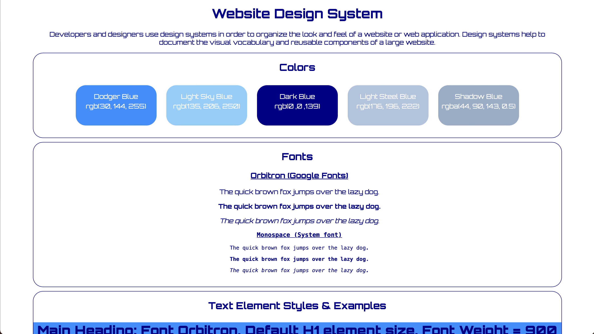
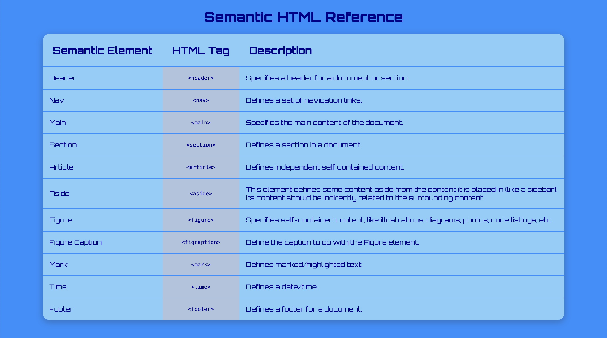
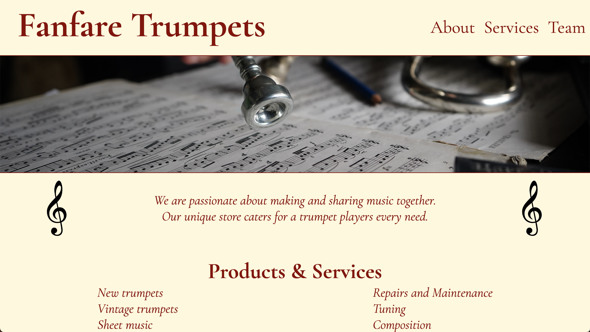

Style Guide
In this project I had to create a web site style guide to organize the look and feel for a web site being developed. The solution is based on the Cheat Sheet project.
Cheat Sheet
This is a static web page built using HTML and CSS. The project required me to build a cheatsheet for one aspect of HTML or CSS. This project pairs with the style guide project.
Fanfare Trumpets
The brief for this challenge was to build a fictitious company home page and to use flexbox in doing so. This was also my first time making a page responsive and using media queries.
Mixed Messages

This a random sports headline generator. Each time a user runs the program, a new, randomized output is printed. This project also required using git for version control and placing the project on gitHub with a readme file.